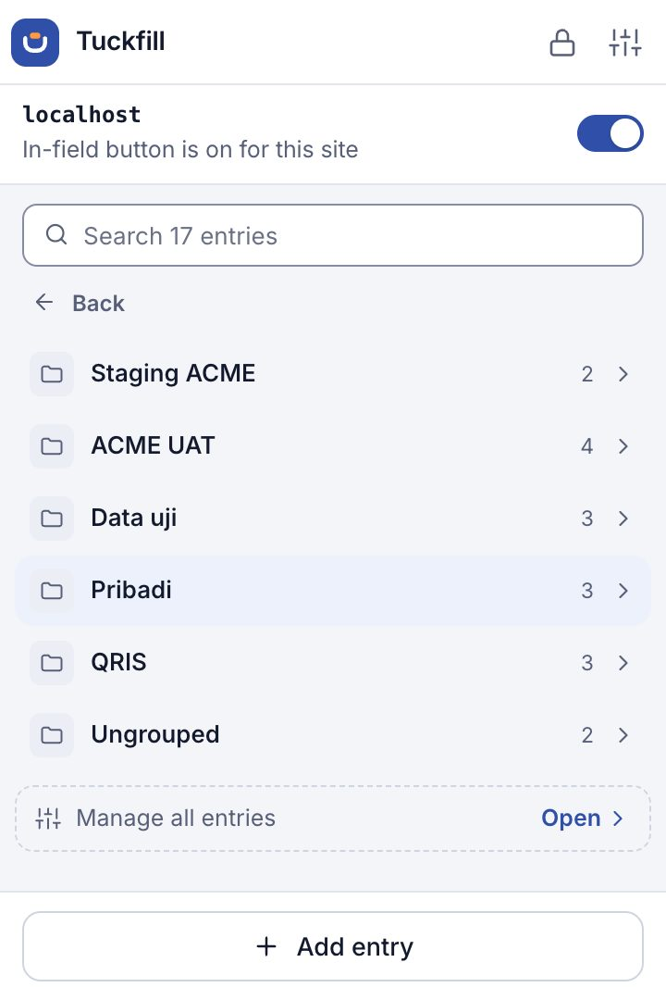

What Tuckfill is for
For anyone, technical or not, who keeps retyping the same text into forms: QA signing up test accounts again and again, admins entering the same data into several systems, or anyone tired of typing an address or a reply template.
- What you save: plain text (emails, addresses, templates, numbers) and logins (user ID, password, PIN), one at a time or as a set that fills several fields at once.
- How it's kept: every entry is encrypted on your computer, and Tuckfill makes no network connection at all.
What it doesn't do
- It isn't a password generator.
{{random}}is just 6 digits for test data. - No sync yet: your data lives in this browser only. Move it with a backup file.
- No sharing entries with other people.
- It never presses Submit. You check the form and send it.
1.Install
The beta isn't in the browser stores yet, so it's installed from a file. Get it from the Releases page.
- Works in Chrome, Edge, Brave and Arc, version 127 or newer. Unzip
tuckfill-<version>.zipinto a folder that stays put, e.g.Documents/Tuckfill. Don't delete or move it: the browser runs Tuckfill from that folder. - Open
chrome://extensionsand turn on Developer mode (top right). - Click Load unpacked and pick that folder.
- Click the puzzle icon in the toolbar and pin Tuckfill so it's always visible.

Updating: replace the contents of the same folder with the new zip, then click the reload icon on the Tuckfill card. Your data stays. Never install two copies side by side.
- Needs Firefox 140 or newer.
- Open
tuckfill-firefox-<version>.xpiin Firefox (drag it onto the window). - Click Add. It stays installed after Firefox closes.
The Firefox file (.xpi) isn't on the Releases page yet. Touch ID isn't available in Firefox; use the 6-digit PIN.
- Needs Safari 26 or newer. Unzip the zip into a folder that stays put.
- Safari → Settings → Advanced → tick Show features for web developers.
- Developer tab → tick Allow unsigned extensions → Add Temporary Extension… → pick the folder.
- Extensions tab → make sure Tuckfill is ticked.
Heads up: Safari removes Tuckfill every time it quits (Cmd+Q), so repeat step 3 each time you open Safari. Your entries stay.
2.Getting started
Create a passphrase
Click the Tuckfill icon and create a passphrase of at least 10 characters. It locks all your entries. You enter it once each time the browser starts; after your computer locks, a 6-digit PIN or Touch ID is enough (see Lock, PIN, Touch ID & backup).
Remember it. If you forget it, your data can't be recovered by anyone.

Add your first entry
Click Add in the Get started checklist, fill in Name and Value, then click Add entry.
- Secret: for passwords and tokens. Masked (••••), not searchable, and can't be copied.
- Only on this site: the entry shows up only on the site you have open. Turn it off to show it everywhere. It can cover several sites, ports or
*.domaintoo: see Many sites & entries. - Group: optional, to keep things together, e.g. "Staging ACME".

Dynamic values
Put these in a value and Tuckfill replaces them every time it fills:
| Write | Gives | Example | Fills as |
|---|---|---|---|
{{random}} | 6 random digits | qa+{{random}}@acme.test | qa+481920@acme.test |
{{date}} | today's date | Test order {{date}} | Test order 2026-11-08 |
{{time}} | the time now | Run {{time}} | Run 14:05 |
{{uuid}} | a long unique ID | {{uuid}} | 3f2b8c1e-… |
3.Turn on for a site
Tuckfill only runs on sites you choose.
- Open the site you want to fill.
- Click the Tuckfill icon and flip the switch at the top (Show the in-field button here).
- The browser asks for access to that site only. Click Allow.
To turn it off, flip the same switch. All sites you've turned on are listed under Settings → Sites.

4.Fill a field
- Click a field on that site. A small blue button appears inside it.
- Click the button and pick an entry. You can also type to search and press Enter.
- The value goes into the field. Tuckfill never submits the form, so you can check first. Picked the wrong one? Click Undo.


Keyboard: click a field, then press Alt + Shift + F (Mac: ⌥ Option + Shift + F). In the picker, use ↑ ↓ and Enter; Esc closes it.
5.Sets: fill several fields at once
For a test account made of several values, e.g. Corporate ID + User ID + Password, create a set:
- Click Add entry and choose Set of fields.
- Name each field like its label on the form ("Email", "User ID", "Phone", "Password"), then fill in its value.
- Mark the password as Secret.
Click any field on that form and pick the set. Each value goes into the field whose name matches.


- Values without a matching field are skipped, never guessed. The toast tells you, e.g. "Filled 2 of 3, 1 not found".
- A password only ever goes into a password box.
- One Undo restores every field.
- Within a set, every
{{random}}uses the same number.
6.Many sites & entries
One entry on several sites
In the entry form, turn on Only on this site, then type another site in Add a site and press Enter.
| Type | Shows up on |
|---|---|
localhost | localhost, on any port |
localhost:8080 | port 8080 only |
*.staging.acme.test | staging.acme.test and every subdomain of it |
- You can paste a full URL. Tuckfill keeps just the site; http and https count as one.
- Wildcards that are too wide, like
*.comor*.co.id, are refused. - For a wildcard, click Allow to turn the in-field button on for all its subdomains at once.
When you have many entries
With more than 15 entries, the popup lists only This site and Recent. The rest is behind N more in N groups. Search covers every entry, including group and site names, and initials work too: tpcm finds "Test Payment Corp Maker". Secret values are never searched.


The All entries page
From the group list, click Manage all entries. There you can move several entries to a group, set their sites or delete them at once, and see every site Tuckfill is on.
This page shows your whole vault, so it asks for your PIN, Touch ID or passphrase every time it opens, even when the popup is unlocked.

7.Lock, PIN, Touch ID & backup
All of this lives in Settings (the sliders icon at the top right of the popup).

Auto-lock
Tuckfill locks when your computer locks or sleeps, after an hour away from it, and when the browser closes. Firefox and Safari can't tell when the computer locks, so there it locks after 15 minutes instead. Prefer a timer (5 minutes to 4 hours)? Change it in Settings → Lock.
6-digit PIN
Settings → Lock → Set PIN. After your computer locks, just type the PIN. When the browser restarts, your passphrase or Touch ID is still needed. 5 wrong PINs lock Tuckfill fully.
Touch ID / Windows Hello
Settings → Lock → Unlock with Touch ID. Save the passkey to iCloud Keychain or Google Password Manager, not "This Chrome profile". Tuckfill still asks for your passphrase every 2 weeks so you don't forget it. Inside web pages, Touch ID works on https sites only.
Unlocking inside a page
Your passphrase is only ever typed in Tuckfill itself, never inside a web page. In the picker, a PIN or Touch ID is enough; otherwise it shows Open Tuckfill. Entry names stay visible while locked (never their values). Don't want that? Turn off Show entry names while locked.

Backup
- Export saves an encrypted
.tuckfillfile that opens with the same passphrase. Do it regularly: it's your only copy if your laptop dies. - Import merges a
.tuckfillor.csvfile without deleting any existing entries. - On a new laptop, choose Restore from a backup during setup.
- A plain CSV export exists too, but that file is not encrypted.
FAQ
Is it safe? Where is my data stored?
- Everything stays on your computer, inside your browser profile. No account, no cloud, no server: Tuckfill makes no network requests at all.
- Entries are encrypted (AES-256) with a key made from your passphrase (PBKDF2, 600,000 rounds). The passphrase itself is never saved.
- Websites can't read your entries. A site only gets the one value you choose to fill.
- Secrets are masked everywhere, never searchable, and can't be copied.
- While Tuckfill is unlocked, someone at your computer can use it, so lock your computer when you step away (Tuckfill locks with it).
- Uninstalling Tuckfill deletes its data. Keep an encrypted backup.
How do I update to a new beta?
Replace the contents of the same folder with the new zip, then click the reload icon on the Tuckfill card in chrome://extensions. Your entries stay.
How will installing work after the official release?
Once Tuckfill is on the Chrome Web Store: click Add to Chrome, done, and updates come in automatically. The Store version counts as a different extension, so before switching, Export a backup from the beta and Restore from a backup in the new one.
Forgot your passphrase?
If Tuckfill is still open, or opens with your PIN or Touch ID: Settings → Change passphrase, and confirm with your PIN or Touch ID. Once it's fully locked and you have no Touch ID, it can't be recovered: choose "Forgot passphrase?" to reset (all entries are deleted), then restore from a backup if you have one.
Limits
- Up to 1,000 entries (about 3 MB). A value can be up to 5,000 characters, an entry name 60 characters, and a set has 2–12 fields. Import files up to 5 MB.
- Not yet supported: dropdowns, checkboxes, radio buttons, and fields inside iframes from other sites.
- Whatever you fill is visible to that site (that's the point), so only fill on sites you trust.
Troubleshooting
The button doesn't show up in a field
Check that the site switch in the popup is on. Tuckfill only runs on regular http/https pages, not on chrome:// pages or the Chrome Web Store.
The site switch won't turn off
That site is on through a wildcard, like *.acme.test. Turn the wildcard off in Settings → Sites.
An entry doesn't show up on the right site
Check the entry's sites. localhost:8080 doesn't show up on localhost:3000; use plain localhost for every port.
"Tuckfill is hidden by this page, so it didn't fill"
The page made Tuckfill transparent or covered it, so Tuckfill refused to fill, for your safety. Another extension that restyles pages (a dark-mode changer, say) can cause it too: try switching it off for a moment. If it happens on a site you trust, report it.
My entries disappeared after an update
They shouldn't: Tuckfill keeps the same ID whatever folder it's in. Make sure the old version is removed, then open the popup again. If it's still empty, restore from a backup and report it.
Report a bug
- Open Settings, scroll to About, and click Copy. This copies your Tuckfill, browser and OS versions, without any entries or sites.
- Open an issue with: the details you copied, the site address, the steps, what you expected, what happened, and a screenshot of the form.
Careful: never send passwords, entry contents, or screenshots of the popup showing your entries.